| 本文通过制作产品系统来演示“自定义系统模型”功能操作，用户可以依本文举一反三，去增加与实现其它系统。 |
|
||
| 一、自定义系统模型一般步骤： |
| 1、系统分析； 2、增加数据表； 3、增加字段； 4、增加系统模型； 5、完成。 |
| 二、举例说明：制作“产品展示系统”： | ||||||||||||||||||||||||||||||||||||||||||||||||||||||||||||||||||||||
| 说明：由于只是教程，所以我们下面只实例制作比较简单的产品系统，用户也可以依自己实际情况增加产品参数字段。 | ||||||||||||||||||||||||||||||||||||||||||||||||||||||||||||||||||||||
| (一)、系统分析： | ||||||||||||||||||||||||||||||||||||||||||||||||||||||||||||||||||||||
| 通常的产品系统由“产品名称”、“价格”、“型号”、“产品缩略图”、“产品图片”、“产品介绍”等组成。 | ||||||||||||||||||||||||||||||||||||||||||||||||||||||||||||||||||||||
| 经过上面分析我们需要的字段如下。（其中“title”、“special.field”、“newstime”、“titlepic”为系统字段，不用设置） | ||||||||||||||||||||||||||||||||||||||||||||||||||||||||||||||||||||||
|
||||||||||||||||||||||||||||||||||||||||||||||||||||||||||||||||||||||
| (二)、增加数据表：建立存放产品信息的数据表 | ||||||||||||||||||||||||||||||||||||||||||||||||||||||||||||||||||||||
| 1、登录后台->“系统”->“数据表与系统模型”->“新建数据表”，进入如下界面： | ||||||||||||||||||||||||||||||||||||||||||||||||||||||||||||||||||||||
| 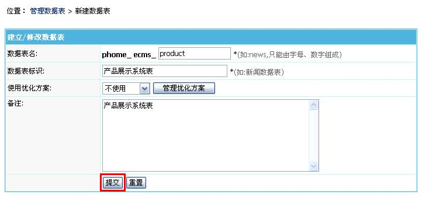 | ||||||||||||||||||||||||||||||||||||||||||||||||||||||||||||||||||||||
| 2、提交后，数据表即可增加成功，转至“管理数据表”会显示刚才新建的表，如下图: | ||||||||||||||||||||||||||||||||||||||||||||||||||||||||||||||||||||||
| 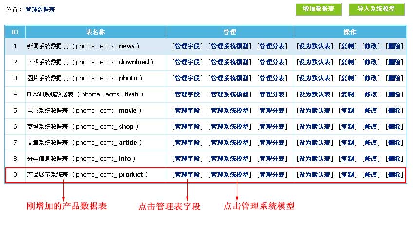 | ||||||||||||||||||||||||||||||||||||||||||||||||||||||||||||||||||||||
| (三)、增加字段：由于产品名称与产品缩略图是系统内置字段，所以下面我们增加其余字段。 | ||||||||||||||||||||||||||||||||||||||||||||||||||||||||||||||||||||||
| 1、登录后台->“系统”->“数据表与系统模型”->“管理数据表”->点击产品数据表的“管理字段”->“增加字段”，进入如下界面： | ||||||||||||||||||||||||||||||||||||||||||||||||||||||||||||||||||||||
| 图1：(增加“型号”字段) 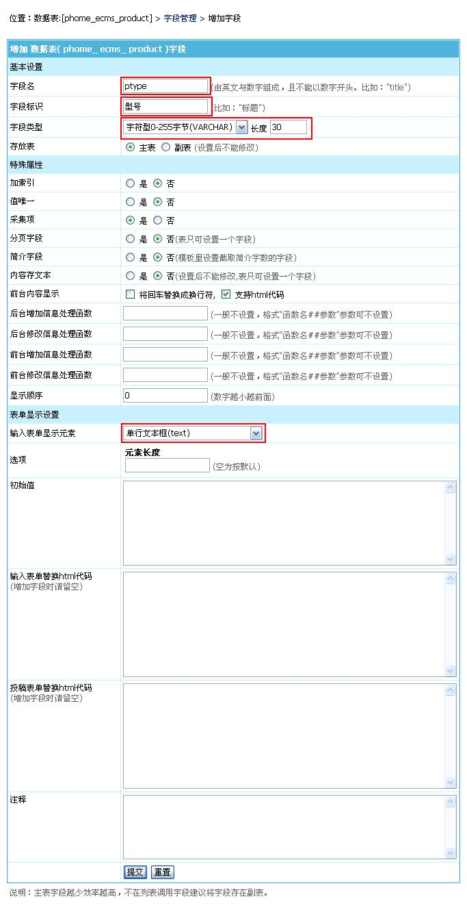 图2：(增加“价格”字段) 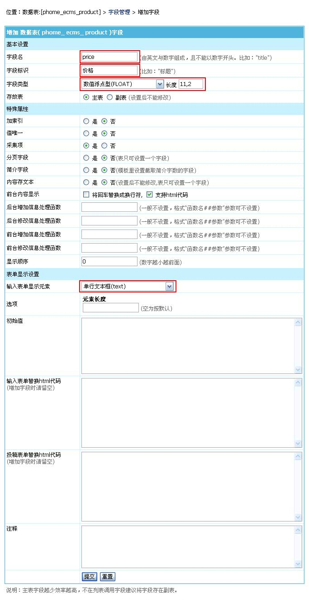 图3：(增加“产品图片”字段) 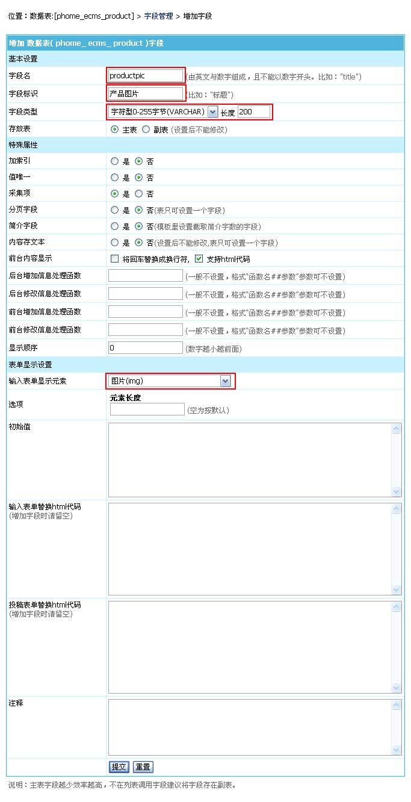 图4：(增加“产品介绍”字段) 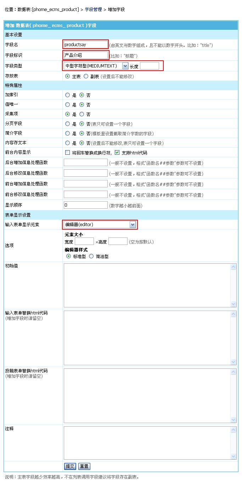 |
||||||||||||||||||||||||||||||||||||||||||||||||||||||||||||||||||||||
| 2、至此，所需字段全部新建完毕，转至“字段管理”会显示刚才新增加的字段，如下图: | ||||||||||||||||||||||||||||||||||||||||||||||||||||||||||||||||||||||
| 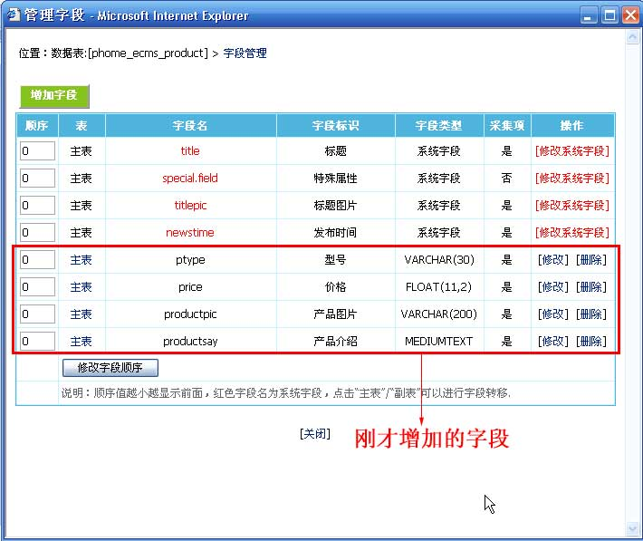 | ||||||||||||||||||||||||||||||||||||||||||||||||||||||||||||||||||||||
| 3、现在我们调整下字段的显示顺序，如下图： | ||||||||||||||||||||||||||||||||||||||||||||||||||||||||||||||||||||||
| 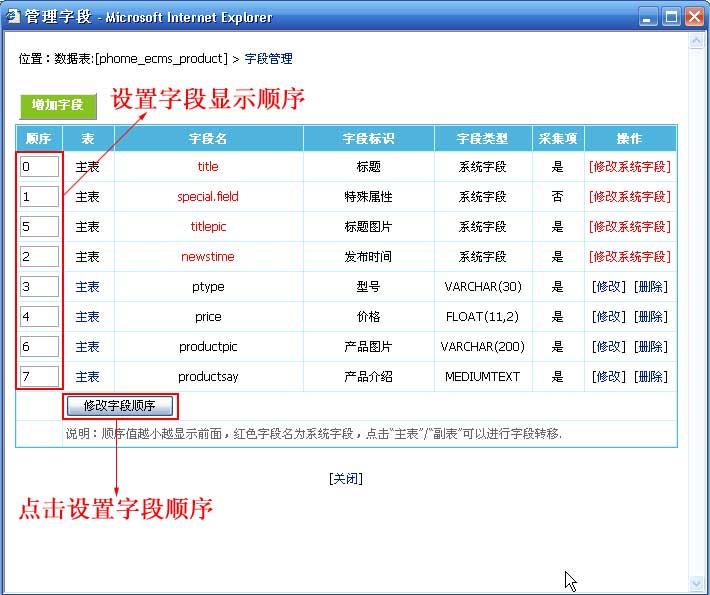 | ||||||||||||||||||||||||||||||||||||||||||||||||||||||||||||||||||||||
| 修改字段顺序后字段列表显示如下图： | ||||||||||||||||||||||||||||||||||||||||||||||||||||||||||||||||||||||
| 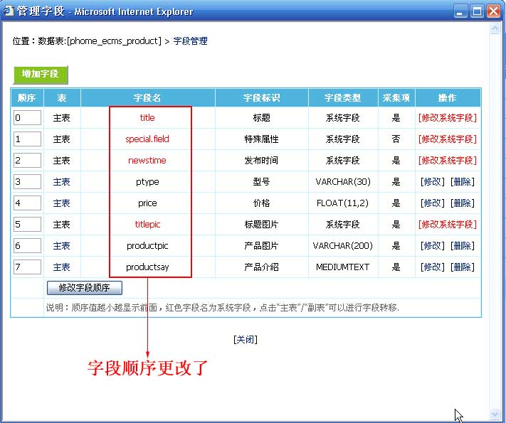 | ||||||||||||||||||||||||||||||||||||||||||||||||||||||||||||||||||||||
| (四)、增加系统模型：建立录入数据界面的格式 | ||||||||||||||||||||||||||||||||||||||||||||||||||||||||||||||||||||||
| 说明：每个系统模型都可以有自己的“后台信息发布与管理”、“前台会员投稿与管理”与“信息采集”。 | ||||||||||||||||||||||||||||||||||||||||||||||||||||||||||||||||||||||
| 1、登录后台->“系统”->“数据表与系统模型”->“管理数据表”->点击产品数据表的“管理系统模型”->“增加系统模型”，进入如下界面： | ||||||||||||||||||||||||||||||||||||||||||||||||||||||||||||||||||||||
| 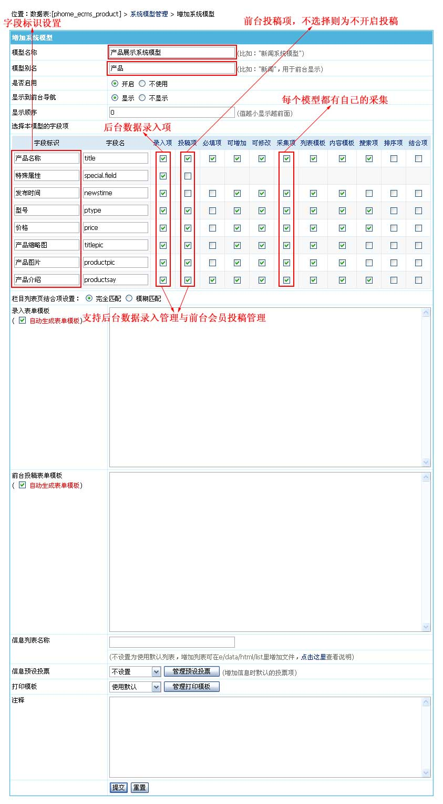 | ||||||||||||||||||||||||||||||||||||||||||||||||||||||||||||||||||||||
| 2、增加系统模型成功后，转至“管理系统模型”查看已增加的系统模型，如下图: | ||||||||||||||||||||||||||||||||||||||||||||||||||||||||||||||||||||||
| 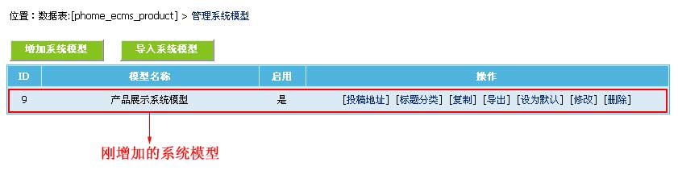 | ||||||||||||||||||||||||||||||||||||||||||||||||||||||||||||||||||||||
| 附加说明：增加模型后，如果对显示表单样式不满意，还可以修改“后台录入表单模板”与“前台投稿表单模板”输出样式:（可用Dreamweaver编辑） | ||||||||||||||||||||||||||||||||||||||||||||||||||||||||||||||||||||||
| 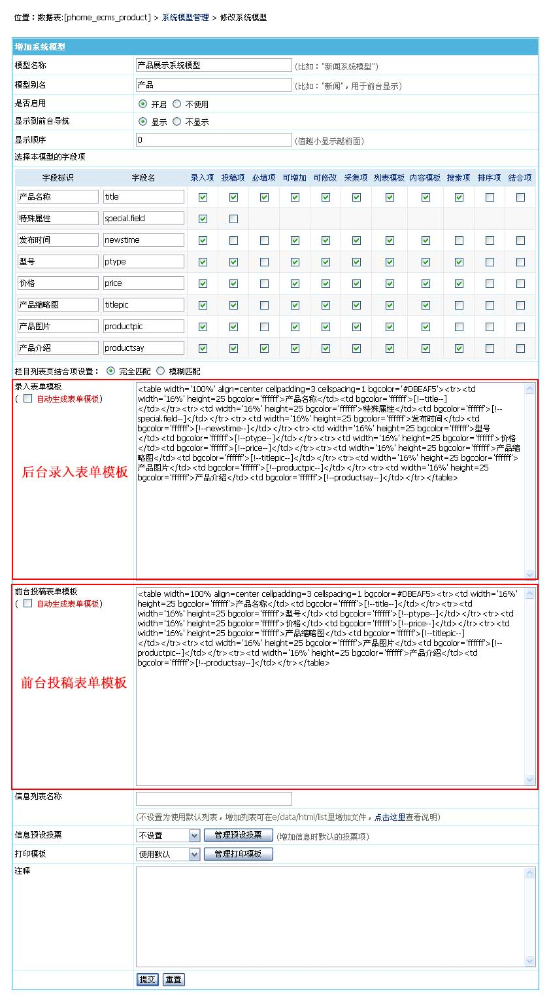 | ||||||||||||||||||||||||||||||||||||||||||||||||||||||||||||||||||||||
| 五、至此，“产品展示系统”制作完毕。 | ||||||||||||||||||||||||||||||||||||||||||||||||||||||||||||||||||||||
| 三、测试制作好的“产品展示系统”模型 |
| (一)、增加栏目： |
| 1、登录后台->“栏目管理”->“增加栏目”，进入如下界面： |
| 图1：(选择“产品展示系统模型”) 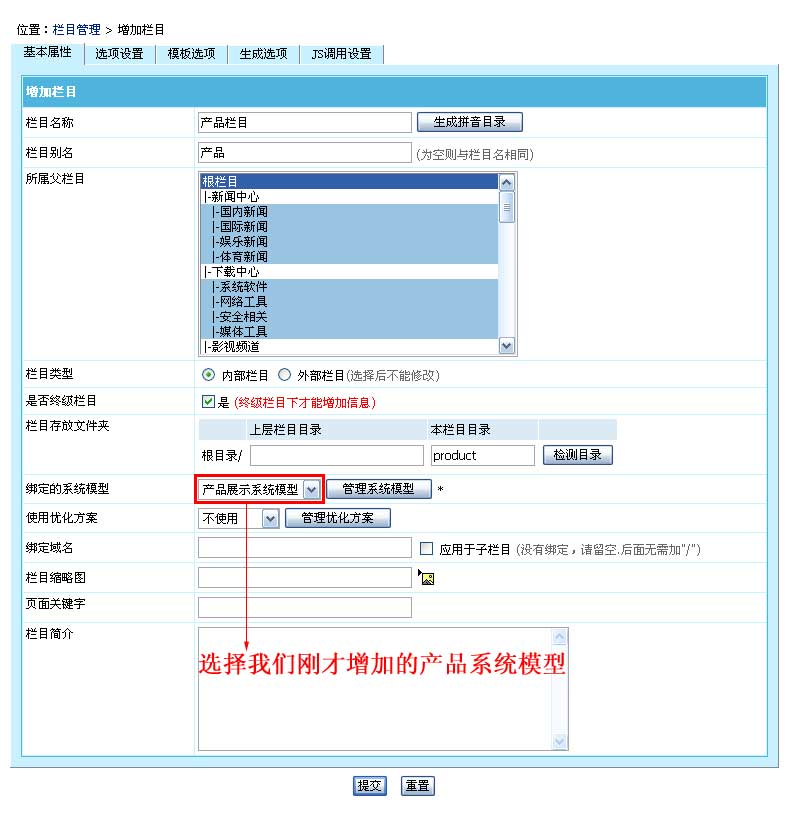 图2：(如果要开启前台会员发布与管理，可仔细设置下面的选项) 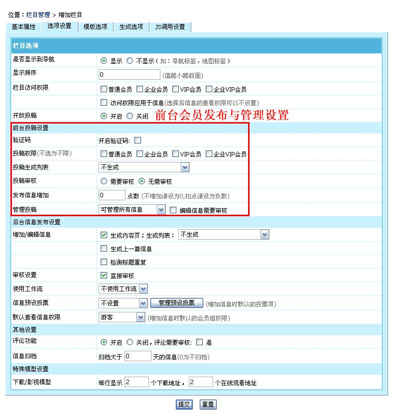 |
| 2、查看后台发布产品信息的表单: |
| 图1：（增加产品） 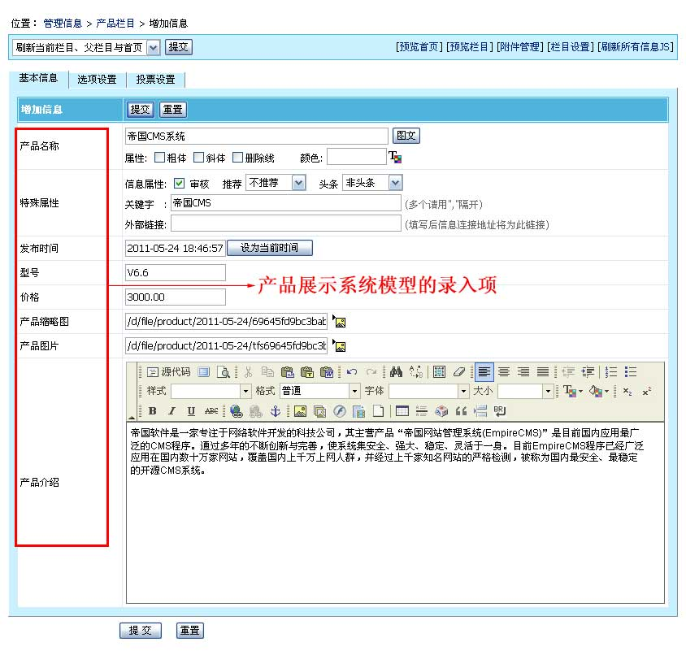 图2：（管理产品） 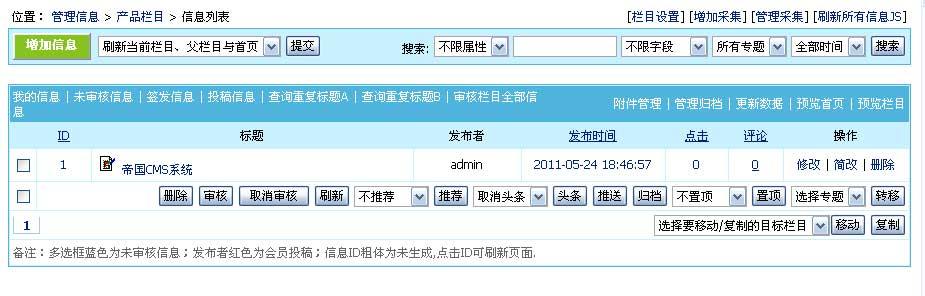 |
| 3、查看前台会员发布产品信息的表单: |
| 图1：（选择栏目） 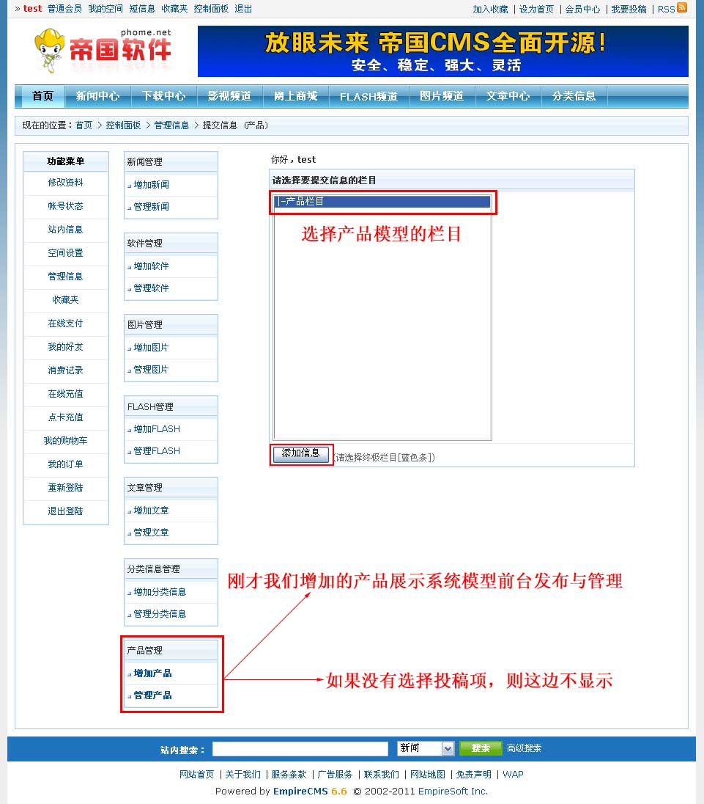 图2：（投稿提交表单） 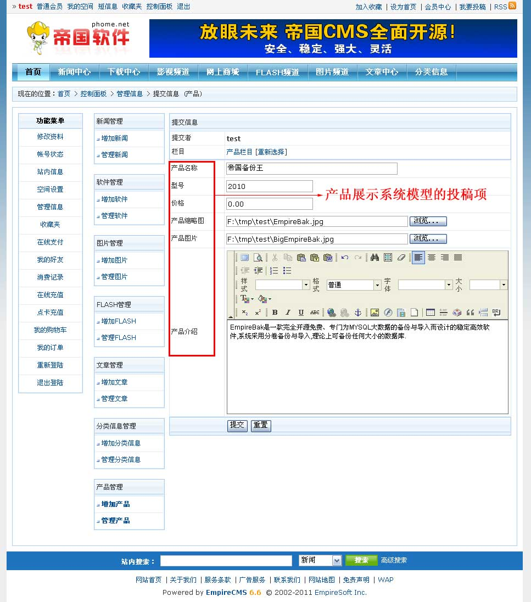 图3：（会员管理投稿） 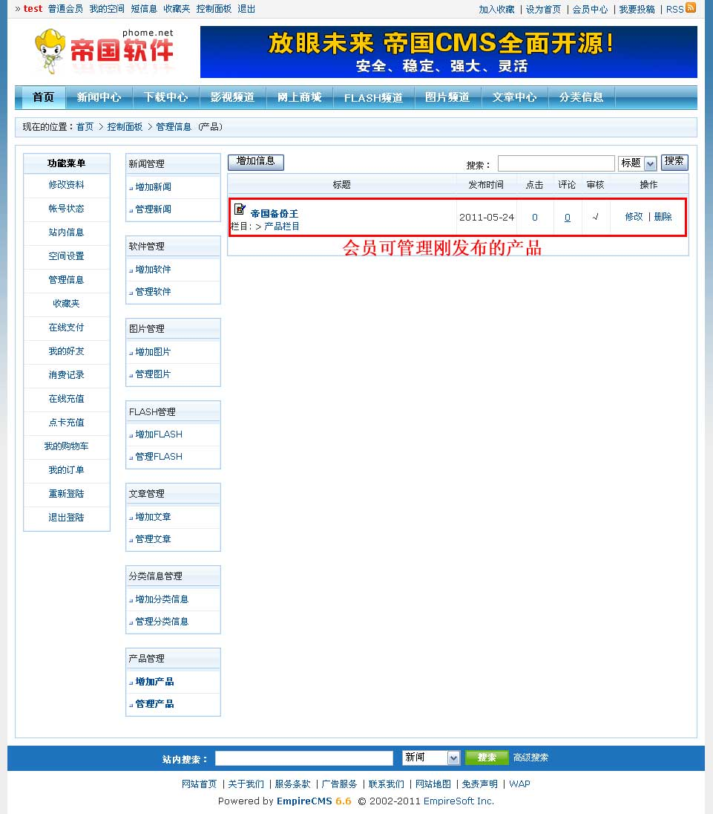 附加说明：记得到参数设置那开启投稿支持上传图片与附件。 |
| 4、查看采集的表单: |
| 登录后台->“栏目”->“采集管理”->“增加采集节点”->选择“产品栏目”，进入如下界面： |
| 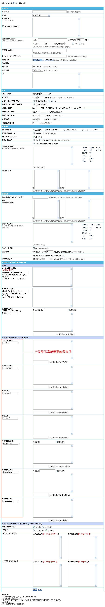 |
| 5、模板调用自定义字段说明：用“[!--字段名--]”表示即可，如：“[!--productsay--]”表示产品介绍。 |
| 相关链接 |
| 1、帝国CMS功能解密之：自定义系统模型 |
| 2、视频演示通过自定义系统模型制作简单的MTV系统 |
| 3、TryLife：帝国CMS【系统模型】实战视频语言教程 |